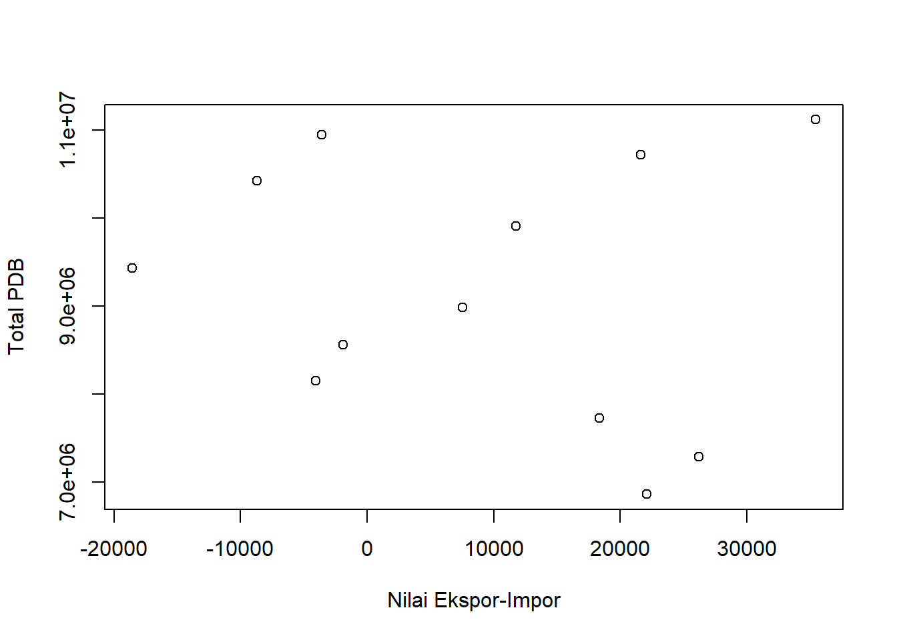
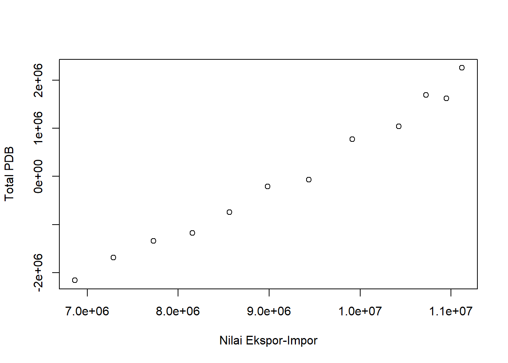

library(readxl)
library(tidyverse)Hubungan Nilai Ekspor-Impor dan Total PDB Indonesia
Mata Kuliah Metodologi Penelitian, Program Studi Perdagangan Internasional Wilayah ASEAN dan RRT Politeknik APP Jakarta
1 Pendahuluan
1.1 Latar Belakang

Produk Domestik Bruto (PDB) adalah hasil tambah dari seluruh nilai produksi atas barang dan jasa di suatu negara dalam periode tertentu. Produk Domestik Bruto terdiri atas nilai konsumsi rumah tangga, investasi, pengeluaran pemerintah, dan nilai ekspor yang dikurang dengan nilai impor (net-export). Dalam perekonomian Indonesia, PDB dapat menjadi tolok ukur untuk meninjau sejauh mana perekonomian Indonesia telah tumbuh. Perekonomian negara dipengaruhi oleh berbagai faktor, termasuk juga kegiatan ekspor dan impor yang telah dilakukan. Impor merupakan kegiatan memasukkan barang dari luar daerah pabean ke dalam daerah pabean dengan memperhatikan kebijakan yang berlaku. Sedangkan ekspor merupakan kegiatan mengeluarkan barang dari dalam daerah pabean ke luar daerah pabean dengan memperhatikan regulasi yang telah ditetapkan.
Bagi Indonesia, kegiatan ekspor sangatlah penting untuk menunjang perekonomian negara sebab sumber daya yang dimiliki Indonesia cukup berpotensial. Di lain sisi, impor juga tak kalah penting sebab tidak semua aspek produksi di Indonesia dapat dimaksimalkan. Pertumbuhan ekspor dan impor mampu mempengaruhi pertumbuhan PDB secara signifikan dikarenakan nilai kegiatan perdagangan internasional yang cukup tinggi yang dapat menambah pendapatan negara.
1.2 Batasan Masalah
Batasan masalah digunakan untuk menghindari adanya perluasan pembahasan yang dapat menyimpang dari topik yang akan dibahas oleh peneliti dan memudahkan peneliti dalam pembahasan masalah yang akan diangkat sehingga tujuan dari penelitian ini akan tercapai dengan baik. Beberapa batasan masalah dalam penelitian ini adalah sebagai berikut:
Ruang lingkup pembahasan hanya meliputi nilai ekspor impor dan total PDB Indonesia selama beberapa tahun.
Penelitian ini membahas mengenai pengaruh dan hubungan antara pertumbuhan nilai ekspor impor dengan pertumbuhan total PDB Indonesia.
Data dan informasi yang digunakan dalam penelitian didapatkan dengan menggunakan metode penelitian kualitatif dengan bersumber pada sumber data sekunder.
1.3 Rumusan Masalah
Berdasarkan latar belakang dan batasan masalah yang telah dijelaskan di atas, maka rumusan masalah dalam penelitian ini adalah sebagai berikut:
Berapa nilai ekspor impor dan total PDB Indonesia selama 2010 – 2021?
Seberapa berpengaruh nilai ekspor impor terhadap total PDB Indonesia?
1.4 Tujuan dan Manfaat Penelitian
Tujuan dari penelitian ini adalah untuk mengetahui pentingnya kegiatan perdagangan internasional terhadap pertumbuhan ekonomi Indonesia yang dibuktikan dengan meneliti hubungan antara nilai ekspor impor Indonesia dengan total PDB Indonesia selama beberapa tahun. Adapun manfaat yang diperoleh dari penelitian ini adalah sebagai berikut:
- Bagi Peneliti
Menambah wawasan mengenai perdagangan internasional yang telah dilakukan oleh Indonesia dan mengetahui seberapa jauh perekonomian Indonesia telah tumbuh.
- Bagi Pembaca
Memberikan informasi mengenai keterkaitan kegiatan perdagangan internasional dengan pertumbuhan ekonomi Indonesia.
1.5 Package
Pada penelitian ini, peneliti menggunakan packages antara lain:
2 Studi Pustaka
2.1 Pengertian Perdagangan Internasional
Menurut Setiawan dan Lestari (2011:1), perdagangan internasional adalah perdagangan yang dilakukan oleh penduduk suatu negara dengan penduduk negara lain atas dasar kesepakatan bersama. Sedangkan menurut Eddie Rinaldy,dkk. (2020), perdagangan internasional adalah hubungan perniagaan antara para pihak yang berada di dua negara yang berbeda, secara garis besar dilakukan dalam bentuk ekspor dan impor. Berdasarkan dua teori tersebut dapat disimpulkan bahwa perdagangan internasional merupakan kegiatan perdagangan yang dilakukan lintas negara dalam bentuk ekspor dan impor.
2.2 Pengertian Ekspor dan Impor
Menurut Sukirno (2008), ekspor adalah pembelian negara lain atas barang buatan perusahaan-perusahaan di dalam negeri. Faktor terpenting yang menentukan ekspor adalah kemampuan dari negara tersebut untuk mengeluarkan barang-barang yang dapat bersaing dalam pasaran luar negeri. Pendapat lain disampaikan oleh Roselyn Hutabarat (1996:306), yang menyatakan bahwa ekspor adalah kegiatan perdagangan dengan cara mengeluarkan barang dari dalam negeri ke luar wilayah pabean Indonesia dengan memenuhi ketentuan yang berlaku. Sedangkan pengertian impor menurut Marolop Tandjung (2011:379), impor adalah kegiatan perdagangan dengan cara memasukkan barang dari luar negeri ke dalam daerah pabean Indonesia sesuai dengan ketentuan peraturan dan perundang-undangan yang berlaku. Selain itu, menurut Susilo Utomo (2008:101), impor adalah suatu kegiatan memasukkan barang dari luar negeri ke dalam wilayah pabeean di dalam negeri yang dilakukan oleh perwakilan dari kedua negara, baik perorangan maupun perusahaan.
Mengacu pada berbagai teori di atas, dapat diketahui bahwa ekspor dan impor merupakan kegiatan mengeluarkan dan memasukkan barang ke dalam dan ke luar daerah pabean Indonesia sesuai dengan ketentuan peraturan yang telah berlaku yang dilakukan oleh seluruh pihak yang berada di dalam maupun luar negeri atas nama perorangan maupun perusahaan.
2.3 Pengertian Produk Domestik Bruto (PDB)
Menurut Sadono (2010:34), PDB adalah nilai keseluruhan semua barang dan jasa yang diproduksi di dalam wilayah tersebut dalam jangka waktu tertentu (biasanya per tahun). PDB menghitung hasil produksi suatu perekonomian tanpa memperhatikan siapa pemilik faktor produksi tersebut. Sedangkan menurut Herlambang, dkk. (2001:22), Gross Domestic Product (GDP) atau Produk Domestik Bruto (PDB) adalah total pendapatan yang dihasilkan di dalam suatu negara, termasuk pendapatan orang asing yang bekerja di dalam suatu negara. PDB mengukur nilai barang dan jasa yang diproduksi di suatu wilayah negara (domestik) tanpa membedakan kewarganegaraan pada suatu periode tertentu. Dapat disimpulkan bahwa PDB merupakan penghasilan yang didapatkan negara atas seluruh kegiatan produksi barang dan jasa di dalam negeri dalam periode waktu tertentu.
2.4 Kerangka Penelitian
Untuk menunjang pertumbuhan ekonomi yang semakin baik pemerintah selalu berupaya untuk meningkatkan pendapatan negara dengan berbagai aspek, salah satunya dengan terus meningkatkan kegiatan ekspor dan impor. Kenaikan nilai dari ekspor dan impor sangat mempengaruhi pertumbuhan PDB per tahun Indonesia, meskipun PDB bukan hanya dipengaruhi oleh ekspor dan impor saja melainkan konsumsi dari pemerintah, konsumsi rumah tangga, dan juga investasi. Namun, secara tidak langsung ekspor dan impor turut mempengaruhi ketiganya sebab berkaitan dengan ketersediaan barang atas permintaan konsumen terhadap barang impor hingga kegiatan ekspor yang dilakukan oleh perorangan atau swasta yang berdampak pada pendapatan pelaku ekspor. Di dalam kegiatan ekonomi, semua pelaku dan faktor ekonomi saling berkaitan. Pada setiap periode, nilai ekspor dan impor tidak selalu mengalami kenaikan. Kenaikan atau penurunan nilai tersebut dipengaruhi oleh beberapa faktor seperti kondisi perekonomian dunia hingga wabah global yang sempat terjadi pada tahun 2020-2021. Total PDB pun tak selalu mengalami kenaikan. Ketika PDB naik, belum tentu nilai ekspor dan impor naik pula. Namun ketika nilai ekspor naik, sangat besar kemungkinan total PDB turut naik.
3 Metode Penelitian
3.1 Data
Data-data yang dianalisis dalam penelitian ini bersumber dari berbagai data sekunder. Sebagian besar data yang bersifat kuantitatif diperoleh dari website resmi Badan Pusat Statistik(BPS) Indonesia dan World Bank. Badan Pusat Statistik merupakan lembaga pemerintah yang menyajikan transparansi data kepada masyarakat melalui internet. Di dalam laman BPS, memiliki berbagai informasi yang dibutuhkan dalam penelitian seperti nilai ekspor, nilai impor, total PDB, hingga indikator-indikator yang mempengaruhinya. Data yang dipaparkan oleh BPS akurat karena merupakan data yang telah dikoordinasikan dan terintegrasi oleh berbagai lembaga pemerintah. Selain dari BPS, data yang digunakan dalam penelitian ini bersumber dari beberapa jurnal dan artikel seperti repository.unimar-amni.ac.id, Gramedia.com, maxmanroe.com, dan beberapa artikel lainnya.

Tabel di atas merupakan data nilai ekspor, nilai impor, dan total net-ekspor serta PDB Indonesia dari tahun 2010-2021. Data tersebut diperoleh dari laman resmi Badan Pusat Statistik yang kemudian disusun dalam bentuk tabel.
3.2 Metode Analisis
Metode pengumpulan data yang digunakan dalam penelitian ini adalah menggunakan metode penelitian kualitatif dengan menggunakan sumber data sekunder. Metode penelitian kualitatif adalah metode yang bersifat deskriptif dan cenderung menggunakan analisisis mendalam terhadap suatu masalah yang ingin diteliti. Sumber data sekunder merupakan data yang diperoleh secara tidak langsung oleh peneliti. Data sekunder didapatkan dari internet, jurnal, artikel, buku, dan lain-lain. Metode yang digunakan peneliti untuk mengolah data yaitu menggunakan aplikasi RStudio dengan menggunakan package readxl dan tidyverse. Model analisis yang digunakan untuk melakukan penelitian ini adalah dengan menggunakan regresi univariat. Regresi univariat merupakan metode analisis yang digunakan untuk menjelaskan tiap variabel yang digunakan dalam penelitian. Regresi univariat hanya menggunakan satu variabel X sebagai sebab yang mengakibatkan variabel Y. Metode ini dipilih untuk membuktikan apakah ada keterkaitan antara net-ekspor (variabel X) dengan PDB (variabel Y). Model yang digunakan pada penelitian ini yaitu regresi sederhana dengan rumus sebagai berikut:
\[ y_{t}=\beta_0 + \beta_1 x_t+\mu_t \] di mana \(y_t\) adalah Total PDB dan \(x_t\) adalah Nilai Ekspor-Impor.
4 Pembahasan
4.1 Pembahasan Masalah

Tabel di atas merupakan total net-ekspor dan total PDB Indonesia selama beberapa tahun. Angka-angka pada tabel ini digunakan untuk melakukan regresi untuk mengetahui apakah pertumbuhan nilai net-ekspor memiliki pengaruh terhadap pertumbuhan PDB.
Dari data di atas, diperoleh plotting sebagai berikut:
setwd('C:/Users/62822/OneDrive/Desktop/METOPEL/exercise')
dat<-read_excel('hubungan nilai eksim dan total pdb.xlsx')
plot(dat$`Net-Export`,dat$PDB,xlab="Nilai Ekspor-Impor",ylab="Total PDB")
Pada plot tersebut, variabel X adalah nilai ekspor-impor (net-ekspor) dan merupakan variabel independen (prediktor). Sedangkan variabel Y adalah total PDB dan merupakan variabel dependen. Plot tersebut membentuk pola heterogen. Pola heterogen merupakan pola yang tidak seragam sehingga tidak dapat membentuk suatu pola tertentu.
4.2 Analisis Masalah
Berdasarkan regresi yang telah dilakukan, maka diperoleh hasil sebagai berikut:
setwd('C:/Users/62822/OneDrive/Desktop/METOPEL/exercise')
dat<-read_excel('hubungan nilai eksim dan total pdb.xlsx')
reg1<-lm(dat$PDB~dat$`Net-Export`,data=dat)
summary(reg1)
Call:
lm(formula = dat$PDB ~ dat$`Net-Export`, data = dat)
Residuals:
Min 1Q Median 3Q Max
-2159010 -1215826 -139436 1186068 2253049
Coefficients:
Estimate Std. Error t value Pr(>|t|)
(Intercept) 9283154.52 508677.97 18.250 5.24e-09 ***
dat$`Net-Export` -11.78 28.29 -0.416 0.686
---
Signif. codes: 0 '***' 0.001 '**' 0.01 '*' 0.05 '.' 0.1 ' ' 1
Residual standard error: 1534000 on 10 degrees of freedom
Multiple R-squared: 0.01705, Adjusted R-squared: -0.08124
F-statistic: 0.1735 on 1 and 10 DF, p-value: 0.6859Dari hasil perhitungan regresi di atas, diketahui bahwa Multiple R-squared adalah 0.01705. Hal ini berarti menunjukkan bahwa net-ekspor mampu menjelaskan sebesar 1,7% total PDB, sisanya sebesar 98,3% dapat dijelaskan oleh variabel atau faktor lain di luar model. Estimasi pada net-ekspor memiliki nilai negatif yang berarti bahwa hubungan X dan Y tidak memiliki hubungan positif. Dengan demikian, maka variabel X (net-ekspor) tidak memiliki pengaruh yang tinggi terhadap pertumbuhan total PDB. Intersepsi pada hasil regresi tersebut menunjukkan bahwa memiliki tingkat signifikan yang tinggi, dengan demikian maka hipotesis yang menyatakan bahwa X memiliki pengaruh terhadap Y dapat diterima. Kelemahan dari data yang dihasilkan pada penelitian ini adalah hasil yang dipaparkan merupakan analisis pribadi dari peneliti terhadap sumber-sumber data sekunder yang diperoleh dari internet sehingga ketepatan hasil penelitian dengan kondisi yang sebenarnya terjadi tidak dapat dipastikan.
Di bawah ini adalah proses plot dan regresi yang telah dilakukan:
setwd('C:/Users/62822/OneDrive/Desktop/METOPEL/exercise')
library('readxl')
library('tidyverse')
# baca data
dat<-read_excel('hubungan nilai eksim dan total pdb.xlsx')
# plot X dan Y
plot(dat$`Net-Export`,dat$PDB,xlab="Nilai Ekspor-Impor",ylab="Total PDB")# regresi
reg1<-lm(dat$PDB~dat$`Net-Export`,data=dat)
summary(reg1)
Call:
lm(formula = dat$PDB ~ dat$`Net-Export`, data = dat)
Residuals:
Min 1Q Median 3Q Max
-2159010 -1215826 -139436 1186068 2253049
Coefficients:
Estimate Std. Error t value Pr(>|t|)
(Intercept) 9283154.52 508677.97 18.250 5.24e-09 ***
dat$`Net-Export` -11.78 28.29 -0.416 0.686
---
Signif. codes: 0 '***' 0.001 '**' 0.01 '*' 0.05 '.' 0.1 ' ' 1
Residual standard error: 1534000 on 10 degrees of freedom
Multiple R-squared: 0.01705, Adjusted R-squared: -0.08124
F-statistic: 0.1735 on 1 and 10 DF, p-value: 0.6859# membuat error
dat$u<-resid(reg1)
# plot error
plot(dat$PDB,dat$u,xlab="Nilai Ekspor-Impor",ylab="Total PDB")
5 Kesimpulan
Produk Domestik Bruto (PDB) merupakan hasil penjumlahan atas seluruh nilai yang dihasilkan oleh kegiatan produksi barang dan jasa di dalam negeri yang meliputi konsumsi rumah tangga, investasi, konsumsi pemerintah, dan hasil bersih nilai ekspor dikurangi impor. PDB digunakan sebagai tolok ukur pertumbuhan ekonomi di Indonesia. Kegiatan perdagangan internasional turut berperan dalam meningkatkan pertumbuhan ekonomi negara. Berdasarkan penelitian yang telah dilakukan, dengan p-value yang diketahui menunjukkan bahwa sebesar 68,59% kegiatan ekspor dan impor memiliki pengaruh terhadap pertumbuhan PDB Indonesia. Kegiatan ekspor dan impor menunjang pertumbuhan ekonomi cukup baik karena di era globalisasi ini seluruh permintaan barang dan jasa tidak hanya berputar dalam pasar domestic saja melainkan juga pasar global. Dengan memanfaatkan perdagangan internasional, negara mampu membawa pertumbuhan ekonomi yang lebih baik meskipun masih banyak faktor penunjang lain yang tak kalah penting seperti kegiatan investasi. Kedepannya, sebaiknya pemerintah terus giat dalam melakukan ekspor komoditas-komoditas potensial yang dimiliki Indonesia dan mulai mengurangi impor produk-produk yang dapat diproduksi pula di dalam negeri. Peningkatan ekspor dan pengurangan impor merupakan salah satu upaya untuk meningkatkan net-ekspor yang nantinya akan berdampak positif untuk pendapatan domestik negara.
6 Daftar Pustaka
Badan Pusat Statistik. Statistik Perdagangan Luar Negeri Indonesia Ekspor 2021, Jilid I. 6 Juli 2022. Diambil 18 Januari 2023, dari https://www.bps.go.id/publication/2022/07/06/d3580f9e1b55a44b265d5ad8/statistik-perdagangan-luar-negeri-indonesia-ekspor-2021-jilid-i.html
Prawiro, M. (2018). Pengertian PDB (Produk Domestik Bruto), Fungsi, Jenis, dan Cara Menghitung PDB. Diambil 18 Januari 2023, dari https://www.maxmanroe.com/vid/bisnis/pengertian-pdb.html
Fadhila, F. Pengertian dan Teori Perdagangan Internasional Menurut Para Ahli. Gramedia Blog. Diambil 18 Januari 2023, dari https://www.gramedia.com/literasi/pengertian-dan-teori-perdagangan-internasional/
Satu Data Perdagangan. Total Ekspor Impor. Diambil 18 Januari 2023, dari https://satudata.kemendag.go.id/data-informasi/perdagangan-luar-negeri/ekspor-impor
Satu Data Perdagangan. Produk Domestik Bruto (PDB). Diambil 18 Januari 2023, dari https://satudata.kemendag.go.id/data-informasi/perdagangan-dalam-negeri/produk-domestik-bruto
Badan Pusat Statistik. EKSPOR DAN IMPOR. Diambil 18 Januari 2023, dari https://www.bps.go.id/exim/
Reza, N.(2020). Pengertian Ekspor Para Ahli. Diambil 18 Januari 2023, dari http://repository.unimar-amni.ac.id/2399/2/9.%20BAB%202%20TINJAUAN%20PUSTAKA%20%281%29.pdf
Liputan6. Pengertian Ekspor dan Impor Menurut Para Ahli, Ketahui Manfaatnya untuk Negara. 24 Januari 2022. Diambil 18 Januari 2023, dari https://id.berita.yahoo.com/pengertian-ekspor-dan-impor-menurut-104523014.html